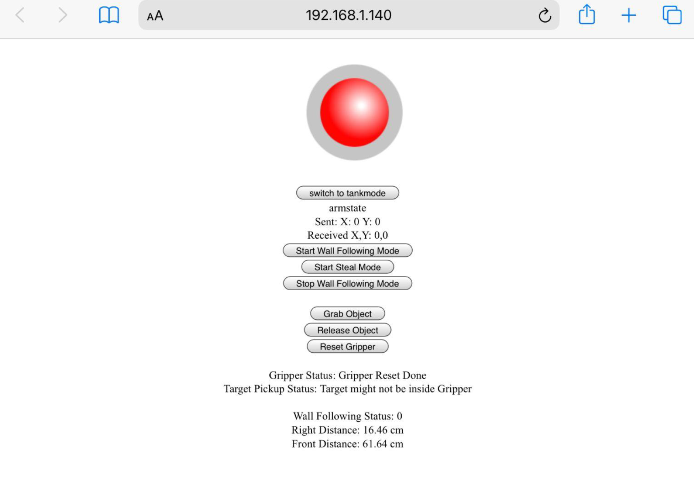

Wall Following Robot with WiFi Control

In this project, I designed and built a Differential Drive robot with WiFi control through a web page and has Autonomous Wall Following capability. Compared with the Path Following Robot Project, this project focuses on design and integration of mechatronic systems. Structures were laser cut through CAD files. Circuits were designed from low level H-bridges and logic gates and soldered onto perf boards. Event-based Architecture was used in backend Software in C++ and was programmed into the ESP32 boards. This robot can be controlled both manually through WiFi and autonomously with ultrasonic sensors. A web page was developed for manual control and sensor displays. (Javascript & AJAX)
Objectives
- Robot can be manually controlled through WiFi and Web page.
- Robot can do Wall Following using Ultrasonic Sensors.
- Robot can autonomously follow the wall and grab a can located next to the wall.
- This robot will complete a GTA 2021 in-class Competition held by course MEAM510 spring 2021.
Mechanical Design
The Mechanical Design of this project includes design of robot structure, gripper, and motor selection. Layers of Acrylic plates are designed to mount different components and they are connected by standoffs. The gripper is designed to grab cans during the competition and it is controlled by a heavy duty servo motor. The gear motors are selected to make sure that their maximum torque is enough to drive the robot when carrying a can. These parts are fabricated by laser cutting with CAD drawings.
Electrical Design
Electrical Design includes designing power circuits, motor driver circuits, and sensor selections. To meet the requirement of maximum current draw from motors, the motors are powered by 6V AA batteries. And the other circuits are driven by a 5V, 2.1A power bank. In order to control the motors using digital commands from ESP32 boards, a motor driver circuit is designed based on the H-bridge and NAND gates. To control the robot to follow the walls, I attached Ultrasonic sensors on the front and right side of the robot. Lever switches acting as touch sensors are also attached at the front to detect collisions.
Software and MCUs Architecture
C++ Codes are programmed into the ESP32 Development Boards which control the robot. For this robot, I used two ESP32 boards and they are connected with wired communications. The main code uses Event-driven architecture and has no blocking codes. The main code includes functions of simple wall following control, manual control using joystick, gripper control, sensor readings, and a web page server. A web page is developed using Javascript, and it includes a joystick controller, buttons for gripper control and switch between autonomous and manual modes, and sensor values display. The web page can send requests to ESP32 using AJAX. ESP32 boards have WiFi modules so that they can assign IP Addresses and connect to the web page using WiFi. A screenshot of my web page is shown below.
Finally, my robot completed the competition with reliable manual control and wall following performances.